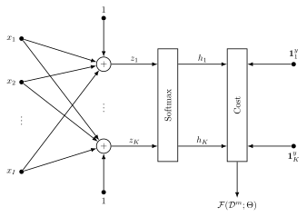
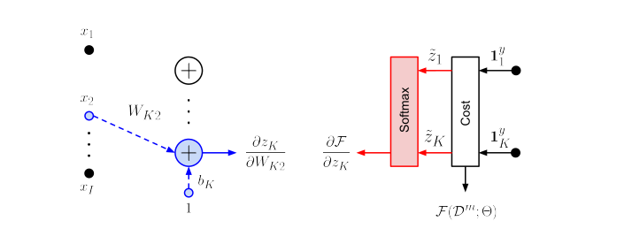
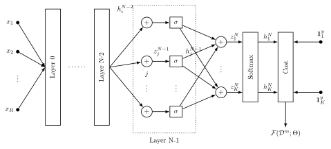
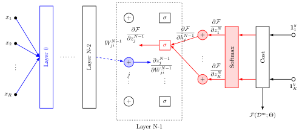
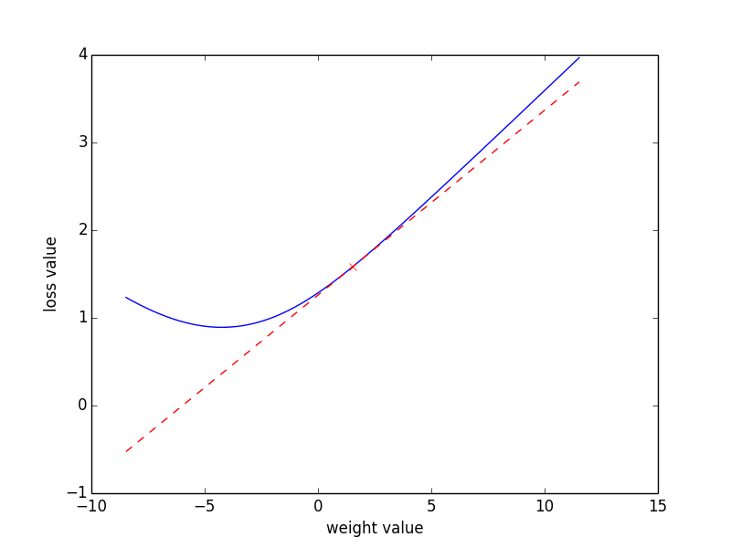

Non-Linear Classifiers Day 2
Today’s class will introduce modern neural network models, commonly known as deep learning models. We will learn the concept of computation graph, a general way of describing complex functions as composition of simpler functions. We will also learn about Backpropagation, a generic solution for gradient-descent based optimization in computation graphs.
Today’s assignment
Your objective today should be to understand fully the concept of Backpropagation. For this, we will code Backpropagation in Numpy on a simple feed forward network. Then we will learn about the Pytorch module, which allows to easily create dynamic computation graphs and computes Backpropagation automatically for us. If you are new to the topic, you should aim to understand the concept of computation graph, finish the Backpropagation exercise and attain a basic understanding of Pytorch. If you already know Backpropagation well and have experience with normal Python, you should aim to complete the whole day.
Introduction to Deep Learning and Pytorch
Deep learning is the name behind the latest wave of neural network research. This is a very old topic, dating from the first half of the 20th century, that has attained formidable impact in the machine learning community recently. There is nothing particularly difficult in deep learning. You have already visited all the mathematical principles you need in the first days of the labs of this school. At their core, deep learning models are just functions mapping vector inputs \(\mathbf{x}\) to vector outputs \(\mathbf{y}\), constructed by composing linear and non-linear functions. This composition can be expressed in the form of a computation graph, where each node applies a function to its inputs and passes the result as its output. The parameters of the model are the weights given to the different inputs of nodes. This architecture vaguely resembles synapse strengths in human neural networks, hence the name artificial neural networks.
Since neural networks are just compositions of simple functions, we can apply the chain rule to derive gradients and learn the parameters of neural networks regardless of their complexity. See Section [gradient_methods] for a refresh on the basic concept. We will also refer to the gradient learning methods introduced in Section [s:me]. Today we will focus on feed-forward networks. The topic of recurrent neural networks (RNNs) will be visited in a posterior chapter.
Some of the changes that led to the surge of deep learning are not only improvements on the existing neural network algorithms, but also the increase in the amount of data available and computing power. In particular, the use of Graphical Processing Units (GPUs) has allowed neural networks to be applied to very large datasets. Working with GPUs is not trivial as it requires dealing with specialized hardware. Luckily, as it is often the case, we are one Python import away from solving this problem.
For the particular case of deep learning, there is a growing number of toolboxes with python bindings that allow you to design custom computational graphs for GPUs some of the best known are Theano, TensorFlow and Pytorch.
In these labs we will be working with Pytorch. Pytorch allows us to create computation graphs of arbitrary complexity and automatically compute the gradients of the cost with respect to any parameter. It will also produce CUDA-compatible code for use with GPUs. One salient property of Pytorch, shared with other toolkits such as Dynet or Chainer, is that its computation graphs are dynamic. This will be a key factor simplifying design once we start dealing with more complex models.
Computation Graphs
Example: The computation graph of a log-linear model

A computation graph is just a way of expressing compositions of functions with a directed acyclic graph. Fig. 1 depicts a log-linear model. Each circle or box corresponds to a node generating one or more outputs by applying some operation over one or more inputs of the preceding nodes. Circles here denote linear transformations, that is weighted sums of the node input plus a bias. The \(k_{th}\) node output can be thus described as \[z_k = \sum_{i=1}^{I} W_{ki} x_i + b_k, \label{eq:linear}\] where \(W_{ki}\) and \(b_k\) are weights and bias respectively. Squared boxes represent non-linear transformations. Applying a softmax function is a way of transforming a \(K\) dimensions real-valued vector into a vector of the same dimension where the sum of all components is one. This allows us to consider the output of this node as a probability distribution. The softmax in Fig. 1 can be expressed as \[p(y=k|{x}) \equiv \tilde{z}_k = \frac{\exp(z_k)}{\sum_{k'=1}^{K} \exp(z_{k'})}. \label{eq:softmax}\] Note that in the following sections we will also use \(\mathbf{z}\) and \(\tilde{\mathbf{z}}\) to denote the output of linear and non-linear functions respectively. By composing Eq. [eq:linear] and Eq. [eq:softmax] we obtain a log-linear model similar to the one we saw on Chapter [day:classification]. This is given by \[\begin{aligned} p(y=k|{x}) & = \frac{1}{Z(\mathbf{W},\mathbf{b},\mathbf{x})}\exp\left(\sum_{i=1}^{I} W_{ki} x_i + b_k\right), \label{eq:loglineargen}\end{aligned}\] where \[\begin{aligned} Z(\mathbf{W},\mathbf{b},\mathbf{x}) = \sum_{k'=1}^{K} \exp\left(\sum_{i=1}^{I} W_{k'i} x_i + b_{k'}\right) \label{eq:loglineargenPartition}\end{aligned}\] is the partition function ensuring that all output values sum to one. The model thus receives a feature vector \(\mathbf{x} \in \mathbb{R}^{I}\) and assigns a probability over \(y \in {1 \cdots K}\) possible class indices. It is parametrized by weights and bias \(\Theta=\{\mathbf{W}, \mathbf{b}\}\), with \(\mathbf{W} \in \mathbb{R}^{K \times I}\) and \(\mathbf{b} \in \mathbb{R}^{K}\).
Stochastic Gradient Descent: a refresher
As we saw on day one, the parameters of a log linear model \(\Theta=\{\mathbf{W}, \mathbf{b}\}\) can be learned with Stochastic Gradient Descent (SGD). To apply SGD we first need to define an error function that measures how good we are doing for any given parameter values. To remain close to the maximum entropy example, we will use as cost function the average minus posterior probability of the correct class, also known as the Cross-Entropy (CE) criterion. Bear in mind, however, that we could pick other non-linear functions and cost functions that do not have a probabilistic interpretation. For example, the same principle could be applied to a regression problem where the cost is the Mean Square Error (MSE). For a training data-set \(\mathcal{D} = \{(\mathbf{x}^1,y^1), \ldots, (\mathbf{x}^M,y^M)\}\) of \(M\) examples, the CE cost function is given by \[\begin{aligned} \mathcal{F}(\mathcal{D};\Theta) & = -\frac{1}{M}\sum_{m=1}^{M} \log p(y^m=k(m) | \mathbf{x}^m), \label{eq:CostLogPos}\end{aligned}\] where \(k(m)\) is the correct class index for the \(m\)-th example. To learn the parameters of this model with SGD, all we need to do is compute the gradient of the cost \(\nabla\mathcal{F}\) with respect to the parameters of the model and iteratively update our parameter estimates as \[\mathbf{W} \leftarrow \mathbf{W} - \eta \nabla_\mathbf{W}\mathcal{F}\] and \[\mathbf{b} \leftarrow \mathbf{b} - \eta \nabla_\mathbf{b}\mathcal{F},\] where \(\eta\) is the learning rate. Note that in practice we will use a mini-batch of examples as opposed to the whole train set. Very often, more elaborated learning rules as e.g. momentum or Adagrad are used. Bear in mind that, in general, these still require the computation of the gradients as the main step. The reasoning here outlined will also be applicable to those.
Deriving Gradients in Computation Graphs using the Chain Rule

The expressions for \(\nabla\mathcal{F}\) are well known in the case of log-linear models. However, for the sake of the introduction to deep learning, we will show how they can be derived by exploiting the decomposition of the cost function into the computational graph seen in the last section (and represented in Fig. 1). To simplify notation, and without loss of generality, we will work with the classification cost of an individual example \[\begin{aligned} \mathcal{F}(\mathcal{D}^m;\Theta) = -\log p(y^m=k(m) | \mathbf{x}^m), \label{eq:CostLogPosExample}\end{aligned}\] where \(\mathcal{D}^m=\{(\mathbf{x}^m, y^m)\}\).
Lets start by computing the element \((k,i)\) of the gradient matrix \(\nabla_\mathbf{W}\mathcal{F}(\mathcal{D^m};\Theta)\), which contains the partial derivative with respect to the weight \(W_{ki}\). To do this, we invoke the chain rule to split the derivative calculation into two terms at variable \(z_{k'}\) (Eq.[eq:linear]) with \(k'=1\cdots K\) \[\begin{aligned} \frac{\partial \mathcal{F}(\mathcal{D}^m;\Theta)}{\partial W_{ki}} & = \sum_{k'=1}^{K} { \color{red} \frac{\partial \mathcal{F}(\mathcal{D}^m;\Theta)}{\partial z_{k'}} }{ \color{blue} \frac{\partial z_{k'}}{\partial W_{ki}}}. \label{eq:LogLingCR1}\end{aligned}\] We have thus transformed the problem of computing the derivative into computing two easier derivatives. We start by the right-most term. The relation between \(z_{k'}\) and \(W_{ki}\) is given in Eq. [eq:linear]. Since \(z_{k'}\) only depends on the weight \(W_{ki}\) in a linear way, the second derivative in Eq.[eq:LogLingCR1] is given by \[\begin{aligned} { \color{blue} \frac{\partial z_{k'}}{\partial W_{ki}}} = \frac{\partial }{\partial W_{ki}}\left(\sum_{i'=1}^{I} W_{k'i'} x^m_{i'} + b_{k'} \right) = &\begin{cases} x_i^m & \mbox{ if } k = k'\\ 0 & \mbox{ otherwise }. \end{cases} \label{eq:partialLinear}\end{aligned}\] For the left-most term, the relation between \(\mathcal{F}(\mathcal{D}^m;\Theta)\) and \(z_k\) is given by Eq. [eq:softmax] together with [eq:CostLogPosExample] \[\begin{aligned} { \color{red} \frac{\partial \mathcal{F}(\mathcal{D}^m;\Theta)}{\partial z_{k}} }= - \frac{\partial }{\partial z_{k}}\left(z_{k(m)} - \log\left(\sum_{k'=1}^{K} \exp(z_{k'}) \right) \right) = \begin{cases} -(1 - \tilde{z}_k) & \mbox{ if } k = k(m)\\ -(-\tilde{z}_k) & \mbox{ otherwise }. \end{cases} \label{eq:patialSoftmax}\end{aligned}\] Bringing the two parts together, we obtain \[\begin{aligned} \frac{\partial \mathcal{F}(\mathcal{D}^m;\Theta)}{\partial W_{ki}} & = \begin{cases} -(1 - \tilde{z}_k) x_i^m & \mbox{ if } k = k(m)\\ -(-\tilde{z}_k) x_i^m & \mbox{ otherwise }. \end{cases}. \label{eq:LogLingCR1--dup2}\end{aligned}\]
From the formula for each element and a single example, we can now obtain the gradient matrix for a batch of \(M\) examples by simply averaging and expressing the previous equations in vector form as follows \[\nabla_\mathbf{W}\mathcal{F}(\mathcal{D};\Theta) = -\frac{1}{M}\sum_{m=1}^{M} \Big(\mathrm{\mathbf{1}}^{y^m} - \tilde{\mathbf{z}}^m \Big) \left(\mathbf{x}^m\right)^T. \label{gradWeigths}\] Here \(\mathrm{\mathbf{1}}^{y^m} \in \mathbb{R}^{K}\) is a vector of zeros with a one in \(y^m=k(m)\), which is the index of the correct class for the example \(m\).
In order to compute the derivatives of the cost function with respect to the bias parameters \(b_{k}\), we only need to compute one additional derivative \[\begin{aligned} \frac{\partial z_{k'}}{\partial b_{k}} = &\begin{cases} 1 & \mbox{ if } k = k'\\ 0 & \mbox{ otherwise }. \end{cases} \label{eqn:eqsilonq}\end{aligned}\] This leads us to the last gradient expression
\[\nabla_\mathbf{b}\mathcal{F}(\mathcal{D};\Theta) = -\frac{1}{M}\sum_{m=1}^{M} \Big(\mathrm{\mathbf{1}}^{y^m} - \tilde{\mathbf{z}}^m \Big). \label{eq:gradBias}\]
An important consequence of the previous derivation is the fact that each gradient of the parameters \(\nabla_\mathbf{W}\mathcal{F}(\mathcal{D};\Theta)\) and \(\nabla_\mathbf{b}\mathcal{F}(\mathcal{D};\Theta)\) can be computed from two terms, displayed with corresponding colours in Fig. 2:
The derivative of the cost with respect to the \(k_{th}\) output of the linear transformation \(\partial \mathcal{F}(\mathcal{D}^m;\Theta)/\partial z_k\), denoted in red. This is, in effect, the error that we propagate backwards from the cost layer.
The derivative of the forward-pass up to the linear transformation applying the weight \(\partial z_k/\partial W_{ki}\), denoted in blue. This is always equal to the input multiplying that weight or one in the case of the bias.
This is the key to the Backpropagation algorithm as we will see in the next Section 4.
To ease-up the upcoming implementation exercise, examine and comment the following implementation of a log-linear model and its gradient update rule. Start by loading Amazon sentiment corpus used in day [day:classification]
import lxmls.readers.sentiment_reader as srs
from lxmls.deep_learning.utils import AmazonData
corpus=srs.SentimentCorpus("books")
data = AmazonData(corpus=corpus)Compare the following numpy implementation of a log-linear model with the derivations seen in the previous sections. Introduce comments on the blocks marked with # relating them to the corresponding algorithm steps.
from lxmls.deep_learning.utils import Model, glorot_weight_init, index2onehot, logsumexp
import numpy as np
class NumpyLogLinear(Model):
def __init__(self, **config):
# Initialize parameters
weight_shape = (config['input_size'], config['num_classes'])
# after Xavier Glorot et al
self.weight = glorot_weight_init(weight_shape, 'softmax')
self.bias = np.zeros((1, config['num_classes']))
self.learning_rate = config['learning_rate']
def log_forward(self, input=None):
"""Forward pass of the computation graph"""
# Linear transformation
z = np.dot(input, self.weight.T) + self.bias
# Softmax implemented in log domain
log_tilde_z = z - logsumexp(z, axis=1, keepdims=True)
return log_tilde_z
def predict(self, input=None):
"""Prediction: most probable class index"""
return np.argmax(np.exp(self.log_forward(input)), axis=1)
def update(self, input=None, output=None):
"""Stochastic Gradient Descent update"""
# Probabilities of each class
class_probabilities = np.exp(self.log_forward(input))
batch_size, num_classes = class_probabilities.shape
# Error derivative at softmax layer
I = index2onehot(output, num_classes)
error = (class_probabilities - I) / batch_size
# Weight gradient
gradient_weight = np.zeros(self.weight.shape)
for l in range(batch_size):
gradient_weight += np.outer(error[l, :], input[l, :])
# Bias gradient
gradient_bias = np.sum(error, axis=0, keepdims=True)
# SGD update
self.weight = self.weight - self.learning_rate * gradient_weight
self.bias = self.bias - self.learning_rate * gradient_biasInstantiate model and data classes. Check the initial accuracy of the model. This should be close to \(50\%\) since we are on a binary prediction task and the model is not trained yet.
# Instantiate model
model = NumpyLogLinear(
input_size=corpus.nr_features,
num_classes=2,
learning_rate=0.05
)
# Define number of epochs and batch size
num_epochs = 10
batch_size = 30
# Instantiate data iterators
train_batches = data.batches('train', batch_size=batch_size)
test_set = data.batches('test', batch_size=None)[0]
# Check initial accuracy
hat_y = model.predict(input=test_set['input'])
accuracy = 100*np.mean(hat_y == test_set['output'])
print("Initial accuracy %2.2f %%" % accuracy)
Train the model with simple batch stochastic gradient descent. Be sure to understand each of the steps involved, including the code running inside of the model class. We will be wokring on a more complex version of the model in the upcoming exercise.
# Epoch loop
for epoch in range(num_epochs):
# Batch loop
for batch in train_batches:
model.update(input=batch['input'], output=batch['output'])
# Prediction for this epoch
hat_y = model.predict(input=test_set['input'])
# Evaluation
accuracy = 100*np.mean(hat_y == test_set['output'])
print("Epoch %d: accuracy %2.2f %%" % (epoch+1, accuracy))Going Deeper than Log-linear by using Composition
The Multilayer Perceptron or Feed-Forward Network
We have seen that just by using the chain rule we can easily compute gradients for compositions of two functions (one non-linear and one linear). However, there was nothing in the derivation that would stop us from composing more than two functions. The algorithm in [algo:mlpforward] describes the Multi-Layer Perceptron (MLP) or Feed-Forward (FF) network. In a similar fashion to the log-linear model, the MLP/FF can be expressed as a computation graph and is displayed in Fig. 3. Take into account the following:
MLPs/FFs are characterized by applying functions in a set of layers subsequently to a single input. This characteristic is also shared by convolutional networks, although the latter also have parameter tying constraints.
The non-linearities in the intermediate layers are usually one-to-one transformations. The most typical are the sigmoid, hyperbolic tangent and the rectified linear unit (ReLU).
The output non-linearity is determined by the output to be estimated. In order to estimate probability distributions the softmax is typically used. For regression problems a last linear layer is used instead.

Backpropagation: an overview
For the examples in this chapter we will consider the case in which we are estimating a distribution over classes, thus we will use the CE cost function (Eq. [eq:CostLogPos]).
To compute the gradient with respect the parameters of the \(n\)-th layer, we just need to apply the chain rule as in the previous section, consecutively. Fortunately, we do not need to repeat this procedure for each layer as it is easy to spot a recursive rule (the Backpropagation recursion) that is valid for many neural models, including feed-forward networks (such as MLPs) as well as recurrent neural networks (RNNs) with minor modifications. The Backpropagation method, which is given in Algorithm [algo:backprop] for the case of an MLP, consists of the following steps:
The forward pass step, where the input signal is injected though the network in a forward fashion (see Alg. [algo:mlpforward])
The Backpropagation step, where the derivative of the cost function (also called error) is injected back through the network and backpropagated according to the derivative rules (see steps 8-17 in Alg. [algo:backprop])
Finally, the gradients with respect to the parameters are computed by multiplying the input signal from the forward pass and the backpropagated error signal, at the corresponding places in the network (step 18 in Alg. [algo:backprop])
Given the gradients computed in the previous step, the model weights can then be easily update according to a specified learning rule (step 19 in Alg. [algo:backprop] uses a mini-batch SGD update rule).
The main step of the method is the Backpropagation step, where one has to compute the Backpropagation recursion rules for a specific network. The next section presents a careful deduction of these recursion rules, for the present MLP model.
Backpropagation: deriving the rule for a feed forward network

In a generic MLP we would like to compute the values of all parameters \(\Theta=\{\mathbf{W}^1, \mathbf{b}^1, \cdots \mathbf{W}^N, \mathbf{b}^N\}\). As explained previously, we will thus need to compute the backpropagated error at each node \(\partial \mathcal{F}(\mathcal{D}^m;\Theta)/\partial z_k^n\), and the corresponding derivative for the forward-pass \(\partial z_k^n/\partial W_{ki}\), for \(n = 1 \cdots N\). Fortunately, it is easy to spot a recursion that will allow us to compute these values for each node, given all its child nodes. To spot it, we can start trying to compute the gradients one layer before the output layer (see Fig. 4), i.e. layer \(N-1\). We start by splitting at with respect to the output of the linear layer at \(N-1\) \[\begin{aligned} \frac{\partial \mathcal{F}(\mathcal{D}^m;\Theta)}{\partial W_{ji}^{N-1}} = \sum_{j'=1}^{J} {\color{red} \frac{\partial \mathcal{F}(\mathcal{D}^m;\Theta)}{\partial z_{j'}^{N-1}}} {\color{blue} \frac{\partial z_{j'}^{N-1}}{\partial W_{ji}^{N-1}}} = {\color{red} \frac{\partial \mathcal{F}(\mathcal{D}^m;\Theta)}{\partial z_{j}^{N-1}}} {\color{blue} \frac{\partial z_{j}^{N-1}}{\partial W_{ji}^{N-1}}} \label{eq:BPderivation1}\end{aligned}\] where, as in the case of the log-linear model, we have used the fact that the ouput of the linear layer \(z_j^{N-1}\) only depends on \(W_{ji}^{N-1}\). We now pick the left-most factor and apply the chain rule to split by the output of the non-linear layer \(\tilde{z}_j^{N-1}\). Assuming that the non linear transformation is one-to-one, as e.g. a sigmoid, tanh, relu we have \[\begin{aligned} {\color{red} \frac{\partial \mathcal{F}(\mathcal{D}^m;\Theta)}{\partial z_{j}^{N-1}}} = {\color{red} \bigg(\sum_{j'=1}^{J} \frac{\partial \mathcal{F}(\mathcal{D}^m;\Theta)}{\partial \tilde{z}_{j'}^{N-1}} \frac{\partial \tilde{z}_{j'}^{N-1}}{\partial z_{j}^{N-1}}\bigg)} = {\color{red} \frac{\partial \mathcal{F}(\mathcal{D}^m;\Theta)}{\partial \tilde{z}_{j}^{N-1}} \frac{\partial \tilde{z}_{j}^{N-1}}{\partial z_{j}^{N-1}}} \label{eq:BPderivation2}\end{aligned}\] To spot a recursion we only need to apply the chain rule a third time. The next variable to split by is the linear output of layer \(N\), \(z_j^{N}\). By looking at Fig. 4, it is clear that the derivatives at each node in layer \(N-1\) will depend on all values of layer \(N\). For the linear layer the summation won’t go away yielding \[\begin{aligned} {\color{red} \frac{\partial \mathcal{F}(\mathcal{D}^m;\Theta)}{\partial z_{j}^{N-1}}} = {\color{red} \bigg(\sum_{k'=1}^{K} \frac{\partial \mathcal{F}(\mathcal{D}^m;\Theta)}{\partial z_{k'}^{N}} \frac{\partial z_{k'}^{N}}{\partial \tilde{z}_{j}^{N-1}}\bigg)\frac{\partial \tilde{z}_{j}^{N-1}}{\partial z_{j}^{N-1}}} \label{eq:BPderivation3}\end{aligned}\] If we call the derivative of the error with respect to the \(N_{th}\) linear layer output as \[\begin{aligned} e^{N}_k = \frac{\partial \mathcal{F}(\mathcal{D}^m;\Theta)}{\partial z_{k}^{N}} \label{eq:BPderivation4}\end{aligned}\] it is easy to deduce from Eqs. [eq:BPderivation2], [eq:BPderivation3] that \[\begin{aligned} e^{N-1}_j = \bigg(\sum_{k'=1}^{K} e^N_{k'} \frac{\partial z_{k'}^{N}}{\partial \tilde{z}_{j}^{N-1}}\bigg)\frac{\partial \tilde{z}_{j}^{N-1}}{\partial z_{j}^{N-1}}. \label{eq:BPderivation5}\end{aligned}\] coming back to the original [eq:BPderivation1] we obtain the formula for the update of each of the weights and bias \[\begin{aligned} \frac{\partial \mathcal{F}(\mathcal{D}^m;\Theta)}{\partial W_{ji}^{N-1}} = {\color{red} e^{N-1}_j} {\color{blue} \tilde{z}_i^{N-2}}, \quad \frac{\partial \mathcal{F}(\mathcal{D}^m;\Theta)}{\partial b_{j}^{N-1}} = {\color{red} e^{N-1}_j} \label{eq:BPderivation6}\end{aligned}\] These formulas are valid for any FF network with hidden layers using one-to-one non-linearities. For the network described in Algorithm [algo:mlpforward] we have \[\begin{aligned} \mathbf{e}^{N} = \mathrm{\mathbf{1}}^{y} - \tilde{\mathbf{z}}^N, \quad \frac{\partial z_{k'}^N}{\partial \tilde{z}_j^{N-1}} = W_{k'j}^N \quad \mbox{and} \quad \frac{\partial \tilde{z}_{j}^n}{\partial z_{j}^n} = \tilde{z}^n_{j}\cdot (1-\tilde{z}^n_{j}) \quad \mbox{with} \quad n \in \{1 \cdots N-2\} \label{eq:BPderivation7}\end{aligned}\] A more detailed version can be seen in Algorithm [algo:backprop]
Backpropagation as a general rule
Once we get comfortable with the derivation of Backpropagation for the FF, it is simple to see that expanding to generic computations graphs is trivial. If we wanted to change the sigmoid non-linearity by a Rectified Linear Unit (ReLU) we would only need to change forward and Backpropagation derivative of the hidden non-linearities as \[\begin{aligned} \tilde{z}_j = &\begin{cases} z_j & \mbox{ if } z_j >= 0\\ 0 & \mbox{ otherwise }. \end{cases} \quad \quad \frac{\partial \tilde{z}_{j}}{\partial z_{j}} = \begin{cases} 1 & \mbox{ if } z_j > 0\\ 0 & \mbox{ otherwise }. \end{cases} \label{eqn:relu}\end{aligned}\] More importantly, Backpropagation can be always defined as a direct acyclic graph with the reverse direction of the forward-pass, where at each node we apply the transpose of the Jacobian of each linear or non linear transformation. Coming back to Eq. [eq:BPderivation7] we have the vector formula \[\begin{aligned} \mathbf{e}^{N-1} = \left(\mathbf{\mathrm{J}}_{\tilde{z}}^{N-1}\right)^T \left(\mathbf{\mathrm{J}}_{W}^N\right)^T \mathbf{e}^N. \label{eq:BPderivation5--dup2}\end{aligned}\] In other words, regardless of the topology of the network and as long as we can compute the forward-pass and the Jacobian of each individual node, we will be able to compute Backpropagation.
Instantiate the feed-forward model class and optimization parameters. This models follows the architecture described in Algorithm [algo:mlpforward].
# Model
geometry = [corpus.nr_features, 20, 2]
activation_functions = ['sigmoid', 'softmax']
# Optimization
learning_rate = 0.05
num_epochs = 10
batch_size = 30
# Instantiate model
from lxmls.deep_learning.numpy_models.mlp import NumpyMLP
model = NumpyMLP(
geometry=geometry,
activation_functions=activation_functions,
learning_rate=learning_rate
)Open the code for this model. This is located in ‘lxmls/deep_learning/numpy_models/mlp.py‘. Implement the method ‘backpropagation()‘ in the class ‘NumpyMLP‘ using Backpropagation recursion that we just saw.
As a first step focus on getting the gradients of each layer, one at a time. Use the code below to plot the loss values for the study weight and perturbed versions.
from lxmls.deep_learning.mlp import get_mlp_parameter_handlers, get_mlp_loss_range
# Get functions to get and set values of a particular weight of the model
get_parameter, set_parameter = get_mlp_parameter_handlers(
layer_index=1,
is_bias=False,
row=0,
column=0
)
# Get batch of data
batch = data.batches('train', batch_size=batch_size)[0]
# Get loss and weight value
current_loss = model.cross_entropy_loss(batch['input'], batch['output'])
current_weight = get_parameter(model.parameters)
# Get range of values of the weight and loss around current parameters values
weight_range, loss_range = get_mlp_loss_range(model, get_parameter, set_parameter, batch)Once you have implemented at least the gradient of the last layer. You can start checking if the values match
gradients = model.backpropagation(batch['input'], batch['output'])
current_gradient = get_parameter(gradients)Now you can plot the values of the loss around a given parameters value versus the gradient. If you have implemented this correctly the gradient should be tangent to the loss at the current weight value, see Figure 5. Once you have completed the exercise, you should be able to plot also the gradients of the other layers. Take into account that the gradients for the first layer will only be non zero for the indices of words present in the batch. You can locate this using.
batch['input'][0].nonzero()Copy the following code for plotting
import matplotlib.pyplot as plt
# Plot empirical
plt.plot(weight_range, loss_range)
plt.plot(current_weight, current_loss, 'xr')
plt.ylabel('loss value')
plt.xlabel('weight value')
# Plot real
h = plt.plot(
weight_range,
current_gradient*(weight_range - current_weight) + current_loss,
'r--'
)
After you have ensured that your Backpropagation algorithm is correct, you can train a model with the data we have.
# Get batch iterators for train and test
train_batches = data.batches('train', batch_size=batch_size)
test_set = data.batches('test', batch_size=None)[0]
# Epoch loop
for epoch in range(num_epochs):
# Batch loop
for batch in train_batches:
model.update(input=batch['input'], output=batch['output'])
# Prediction for this epoch
hat_y = model.predict(input=test_set['input'])
# Evaluation
accuracy = 100*np.mean(hat_y == test_set['output'])
print("Epoch %d: accuracy %2.2f %%" % (epoch+1, accuracy))Some final reflections on Backpropagation
If you are new to the neural network topic, this is about the most important piece of theory you should learn about deep learning. Here are some reflections that you should keep in mind.
Backpropagation allows us in principle to compute the gradients for any differentiable computation graph.
We only need to know the forward-pass and Jacobian of each individual node in the network to implement Backpropagation.
Learning guarantees are however weaker than for expectation maximization or convex optimization algorithms.
In practice optimization will often get trapped on local minima and exhibit high variance in performance for small changes.
Deriving gradients and GPU code with Pytorch
An Introduction to Pytorch and Computation Graph Toolkits
As you may have observed, the speed of SGD training for MLPs slows down considerably when we increase the number of layers. One reason for this is that the code that we use here is not very optimized. It is thought for you to learn the basic principles. Even if the code was more optimized, it would still be very slow for reasonable network sizes. The cost of computing each linear layer is proportional to the dimensionality of the previous and current layers, which in most cases will be rather large.
For this reason most deep learning applications use Graphics Processing Units (GPU) in their computations. This specialized hardware is normally used to accelerate computer graphics, but can also be used for some computation intensive tasks like matrix multiplications. However, we need to deal with specific interfaces and operations in order to use a GPU. This is where Pytorch comes in. Pytorch is a computation graph toolkit with following nice features
Automatic differentiation. We only need to express the computation graph of the forward pass. Pytorch will compute the gradients for us.
GPU integration: The code will be ready to work on a GPU.
An active community focused on the application of Pytorch to Deep Learning.
Dynamic computation graphs. This allows us to change the computation graph within each update.
Note that all of these properties are separately available in other toolkits. Dynet has very good dynamic graph functionality and cpu performance, Tensor Flow is backed by Google and has a large community, Amazon’s MXNet of Microsoft’s CNTK are also competing to play a central role. It is hard to say at this point which toolkit will be the best option in the future. At this point we chose Pytorch because it strikes a balance between a strong community, ease of use and dynamic computation graphs. Also take into account that transiting from a toolkit to another is not very complicated, as the primitives are relatively similar across them.
In general, and compared to numpy, computation graph toolkits are less easy to use. In the case of Pytorch we will have to consider following aspects
Pytorch types are less flexible than numpy arrays since they have to act on data stored on the GPU. Casting of all variables to Pytorch types will be often a source of errors.
Not all operations available in numpy are available on Pytorch. Also the semantics of the function may differ.
Despite being a big improvement compared to the early toolkits like Theano, Pytorch errors can still be difficult to track sometimes.
As we will see, Pytorch has a good GPU performance, but its CPU performance is not great. Particularly at small sizes.
In order to learn the differences between a numpy and a Pytorch implementation, explore the reimplementation of Ex. [exercise:exerciseNumpy1] in Pytorch. Compare the content of each of the functions, in particular the forward() and update methods(). The comments indicated as IMPORTANT will highlight common sources of errors.
import torch
class PytorchLogLinear(Model):
def __init__(self, **config):
# Initialize parameters
weight_shape = (config['input_size'], config['num_classes'])
# after Xavier Glorot et al
weight_np = glorot_weight_init(weight_shape, 'softmax')
self.learning_rate = config['learning_rate']
# IMPORTANT: Cast to pytorch format
self.weight = torch.from_numpy(weight_np).float()
self.weight.requires_grad = True
self.bias = torch.zeros(1, config['num_classes'], requires_grad=True)
self.log_softmax = torch.nn.LogSoftmax(dim=1)
self.loss_function = torch.nn.NLLLoss()
def _log_forward(self, input=None):
"""Forward pass of the computation graph in logarithm domain (pytorch)"""
# IMPORTANT: Cast to pytorch format
input = torch.from_numpy(input).float()
# Linear transformation
z = torch.matmul(input, torch.t(self.weight)) + self.bias
# Softmax implemented in log domain
log_tilde_z = self.log_softmax(z)
# NOTE that this is a pytorch class!
return log_tilde_z
def predict(self, input=None):
"""Most probable class index"""
log_forward = self._log_forward(input).data.numpy()
return np.argmax(log_forward, axis=1)
def update(self, input=None, output=None):
"""Stochastic Gradient Descent update"""
# IMPORTANT: Class indices need to be casted to LONG
true_class = torch.from_numpy(output).long()
# Compute negative log-likelihood loss
loss = self.loss_function(self._log_forward(input), true_class)
# Use autograd to compute the backward pass.
loss.backward()
# SGD update
self.weight.data -= self.learning_rate * self.weight.grad.data
self.bias.data -= self.learning_rate * self.bias.grad.data
# Zero gradients
self.weight.grad.data.zero_()
self.bias.grad.data.zero_()
return loss.data.numpy()Once you understand the model you can instantiate it and run it using the standard training loop we have used on previous exercises.
# Instantiate model
model = PytorchLogLinear(
input_size=corpus.nr_features,
num_classes=2,
learning_rate=0.05
)As the final exercise today implement the log_forward() method in lxmls/deep_learning/pytorch_models/mlp.py. Use the previous exercise as reference. After you have completed this you can run both systems for comparison.
# Model
geometry = [corpus.nr_features, 20, 2]
activation_functions = ['sigmoid', 'softmax']
# Instantiate model
import numpy as np
from lxmls.deep_learning.pytorch_models.mlp import PytorchMLP
model = PytorchMLP(
geometry=geometry,
activation_functions=activation_functions,
learning_rate=0.05
)